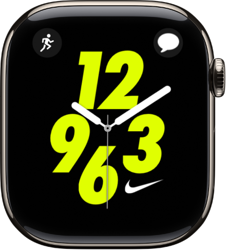

与 Nike 合作设计的这款指针风格的表盘以醒目的大数字形式显示时间。
下方的文件数包括本地化资源。固件名称键能确认包的归属；组件的圆屏点击边界、亮屏过渡与 AOD 对照均待设备验证。
原始包 已解析属性表 Mach-O 方法与成员 ARM64 汇编 解出的图集
.strings × 44 .plist × 2 .car × 1 无扩展名 × 1
NTKVictoryAnalogFaceBundle.bundleFACE_STYLE_VICTORY_ANALOG_DESCRIPTION色组与设备条件 VictoryAnalog.color.plist 共享色组与默认值
-[NTKVictoryAnalogBackgroundColorPalette tritiumLogoColor];-[NTKVictoryAnalogBackgroundColorPalette tritiumBackgroundColor];-[NTKVictoryAnalogBackgroundColorPalette tritiumDotMarkerColorAtIndex:];-[NTKVictoryAnalogBackgroundColorPalette tritiumLargeNumbers];-[NTKVictoryAnalogBackgroundColorPalette tritiumLargeNumbersOutline];-[NTKVictoryAnalogBackgroundColorPalette tritiumNumbersColorAtIndex:];-[NTKVictoryAnalogBackgroundColorPalette tritiumOutlineNumbers];-[NTKVictoryAnalogBackgroundColorPalette tritiumOutlineNumbersColorAtIndex:];-[NTKVictoryAnalogBackgroundColorPalette tritiumSmallNumbers];-[NTKVictoryAnalogColorPalette tritiumLogoColor];-[NTKVictoryAnalogColorPalette tritiumBackgroundColor];-[NTKVictoryAnalogColorPalette tritiumDotMarkerColorAtIndex:];-[NTKVictoryAnalogColorPalette tritiumLargeNumbers];-[NTKVictoryAnalogColorPalette tritiumLargeNumbersOutline];-[NTKVictoryAnalogColorPalette tritiumNumbersColorAtIndex:];-[NTKVictoryAnalogColorPalette tritiumOutlineNumbers];-[NTKVictoryAnalogColorPalette tritiumOutlineNumbersColorAtIndex:];-[NTKVictoryAnalogColorPalette tritiumSmallNumbers];-[NTKVictoryAnalogColorPalette tritiumNumbersColor];-[NTKVictoryAnalogColorPalette tritium_cornerComplicationsAccent];+[NTKVictoryAnalogFace tritium_burnInFaceName];-[NTKVictoryAnalogFaceView tritium_usesWidgetTransitionPresetColors];-[NTKVictoryAnalogFaceView tritium_createFaceAnimator];-[NTKVictoryAnalogFaceView _tritium_updateComplicationColors];-[NTKVictoryAnalogColorPalette secondHand];-[NTKVictoryAnalogFaceView _startScrubbingAnimated:withCompletion:];-[NTKVictoryAnalogFaceView tritium_usesWidgetTransitionPresetColors];-[NTKVictoryAnalogFaceView _applyTransitionFraction:fromOption:toOption:forCustomEditMode:slot:];-[NTKVictoryAnalogFaceView tritium_createFaceAnimator];-[NTKVictoryAnalogFaceView _endScrubbingAnimated:withCompletion:];-[NTKVictoryAnalogFaceView _configureForTransitionFraction:fromEditMode:toEditMode:];-[NTKVictoryAnalogBackgroundColorPalette backgroundColor];-[NTKVictoryAnalogBackgroundColorPalette logo];-[NTKVictoryAnalogBackgroundColorPalette tritiumLogoColor];-[NTKVictoryAnalogBackgroundColorPalette analogDotColor];-[NTKVictoryAnalogBackgroundColorPalette dotMarkerAlpha];-[NTKVictoryAnalogBackgroundColorPalette dotMarkerColorAtIndex:];-[NTKVictoryAnalogBackgroundColorPalette isMulticolor];-[NTKVictoryAnalogBackgroundColorPalette numberColorAtIndex:];-[NTKVictoryAnalogBackgroundColorPalette numbersColor];-[NTKVictoryAnalogBackgroundColorPalette smallDotsColorBrightness];-[NTKVictoryAnalogBackgroundColorPalette smallNumbersColorBrightness];-[NTKVictoryAnalogBackgroundColorPalette tritiumBackgroundColor];-[NTKVictoryAnalogBackgroundColorPalette tritiumDotMarkerColorAtIndex:];-[NTKVictoryAnalogBackgroundColorPalette tritiumLargeNumbers];-[NTKVictoryAnalogBackgroundColorPalette tritiumLargeNumbersOutline];-[NTKVictoryAnalogBackgroundColorPalette tritiumNumbersColorAtIndex:];-[NTKVictoryAnalogBackgroundColorPalette tritiumOutlineNumbers];-[NTKVictoryAnalogBackgroundColorPalette tritiumOutlineNumbersColorAtIndex:];-[NTKVictoryAnalogBackgroundColorPalette tritiumSmallNumbers];-[NTKVictoryAnalogColorPalette background];-[NTKVictoryAnalogColorPalette numbers];-[NTKVictoryAnalogColorPalette logo];-[NTKVictoryAnalogColorPalette dotMarkerAlpha];-[NTKVictoryAnalogColorPalette secondHand];-[NTKVictoryAnalogColorPalette cornerComplicationsAccent];-[NTKVictoryAnalogColorPalette cornerComplicationsAlternate];-[NTKVictoryAnalogColorPalette dotMarker];-[NTKVictoryAnalogColorPalette handInlay];-[NTKVictoryAnalogColorPalette hands];+[NTKVictoryAnalogColorEditOption pigmentFaceDomain];+[NTKVictoryAnalogColorEditOption domain];+[NTKVictoryAnalogColorEditOption _orderedValuesForDevice:];-[NTKVictoryAnalogColorPalette configurationDidChange:];-[NTKVictoryAnalogColorPalette identifier];-[NTKVictoryAnalogColorPalette setStyle:];-[NTKVictoryAnalogColorPalette backgroundColor];-[NTKVictoryAnalogColorPalette _background];-[NTKVictoryAnalogColorPalette tritiumLogoColor];-[NTKVictoryAnalogColorPalette digit];-[NTKVictoryAnalogColorPalette style];-[NTKVictoryAnalogColorPalette copyWithZone:];-[NTKVictoryAnalogColorPalette _logo];-[NTKVictoryAnalogColorPalette analogDotColor];-[NTKVictoryAnalogColorPalette dotMarkerAlpha];-[NTKVictoryAnalogColorPalette dotMarkerColorAtIndex:];-[NTKVictoryAnalogColorPalette hasWhiteElements];-[NTKVictoryAnalogColorPalette isMulticolor];-[NTKVictoryAnalogColorPalette numberColorAtIndex:];-[NTKVictoryAnalogColorPalette numbersColor];-[NTKVictoryAnalogColorPalette smallDotsColorBrightness];-[NTKVictoryAnalogColorPalette smallNumbersColorBrightness];-[NTKVictoryAnalogColorPalette tritiumBackgroundColor];-[NTKVictoryAnalogColorPalette tritiumDotMarkerColorAtIndex:];-[NTKVictoryAnalogColorPalette tritiumLargeNumbers];-[NTKVictoryAnalogColorPalette tritiumLargeNumbersOutline];-[NTKVictoryAnalogColorPalette tritiumNumbersColorAtIndex:];-[NTKVictoryAnalogColorPalette tritiumOutlineNumbers];-[NTKVictoryAnalogColorPalette tritiumOutlineNumbersColorAtIndex:];-[NTKVictoryAnalogColorPalette tritiumSmallNumbers];-[NTKVictoryAnalogColorPalette _markerAtIndex:];-[NTKVictoryAnalogColorPalette _cornerComplicationsAccent];-[NTKVictoryAnalogColorPalette _cornerComplicationsAlternate];-[NTKVictoryAnalogColorPalette _dotMarker];-[NTKVictoryAnalogColorPalette _handInlay];-[NTKVictoryAnalogColorPalette _hands];-[NTKVictoryAnalogColorPalette _numbers];-[NTKVictoryAnalogColorPalette tritiumNumbersColor];-[NTKVictoryAnalogColorPalette tritium_cornerComplicationsAccent];+[NTKVictoryAnalogFace _initialDefaultComplicationForSlot:forDevice:];+[NTKVictoryAnalogFace _faceClassOfFaceWithRichComplicationSlotsForDevice:];+[NTKVictoryAnalogFace _complicationSlotDescriptors];+[NTKVictoryAnalogFace _orderedComplicationSlots];-[NTKVictoryAnalogFace editOptionThatHidesAllComplications];-[NTKVictoryAnalogFace _numberOfOptionsForCustomEditMode:slot:];-[NTKVictoryAnalogFace _defaultOptionForCustomEditMode:slot:];-[NTKVictoryAnalogFace _indexOfOption:forCustomEditMode:slot:];-[NTKVictoryAnalogFace _optionAtIndex:forCustomEditMode:slot:];-[NTKVictoryAnalogFaceBundle complicationTypesBySlot];-[NTKVictoryAnalogFaceBundle _fullscreenDefaultFacesForDevice:colorOptions:];-[NTKVictoryAnalogFaceBundle _colorOptionsFromColorValues:device:];-[NTKVictoryAnalogFaceBundle spring2021VictoryColors];-[NTKVictoryAnalogFaceView _complicationAlphaForEditMode:];-[NTKVictoryAnalogFaceView _keylineCornerRadiusForComplicationSlot:];-[NTKVictoryAnalogFaceView _homeScreenBackgroundColor];-[NTKVictoryAnalogFaceView createFaceColorPalette];-[NTKVictoryAnalogFaceView _editSpeedForCustomEditMode:slot:];-[NTKVictoryAnalogFaceView _legacyLayoutOverrideforComplicationType:slot:];-[NTKVictoryAnalogFaceView tritium_usesWidgetTransitionPresetColors];-[NTKVictoryAnalogFaceView _applyTransitionFraction:fromOption:toOption:forCustomEditMode:slot:];-[NTKVictoryAnalogFaceView _slotForUtilitySlot:];-[NTKVictoryAnalogFaceView _applyBreathingFraction:forCustomEditMode:slot:];-[NTKVictoryAnalogFaceView _applyOption:forCustomEditMode:slot:];-[NTKVictoryAnalogFaceView _prepareForEditing];-[NTKVictoryAnalogFaceView utilityDateComplicationFontForDateStyle:];-[NTKVictoryAnalogFaceView _configureComplicationView:forSlot:];-[NTKVictoryAnalogFaceView _loadLayoutRules];-[NTKVictoryAnalogFaceView _utilityComplicationSlots];-[NTKVictoryAnalogFaceView _utilitySlotForSlot:];-[NTKVictoryAnalogFaceView _newLegacyViewForComplication:family:slot:];-[NTKVictoryAnalogFaceView palette];-[NTKVictoryAnalogFaceView _tritium_updateComplicationColors];-[NTKVictoryAnalogFaceView textLayoutStyleForSlot:];-[NTKVictoryAnalogFaceView _keylineFrameForComplicationSlot:selected:];-[NTKVictoryAnalogFaceView _applyRubberBandingFraction:forCustomEditMode:slot:];-[NTKVictoryAnalogFaceView _applyComplicationViewColor:alternateColor:];-[NTKVictoryAnalogFaceView _applyColor:alternateColor:toComplicationView:];+[NTKVictoryAnalogRichFace _complicationSlotDescriptors];+[NTKVictoryAnalogRichFace _richComplicationSlotsForDevice:];-[NTKVictoryAnalogRichFaceView _legacyLayoutOverrideforComplicationType:slot:];-[NTKVictoryAnalogRichFaceView _layoutStyleForSlot:];-[NTKVictoryAnalogRichFaceView _fadesComplicationSlot:inEditMode:];-[NTKVictoryAnalogRichFaceView _configureComplicationView:forSlot:];-[NTKVictoryAnalogRichFaceView _newLegacyViewForComplication:family:slot:];-[NTKVictoryAnalogRichFaceView _keylineFrameForComplicationSlot:selected:];-[NTKVictoryAnalogRichFaceView _applyColor:alternateColor:toComplicationView:];